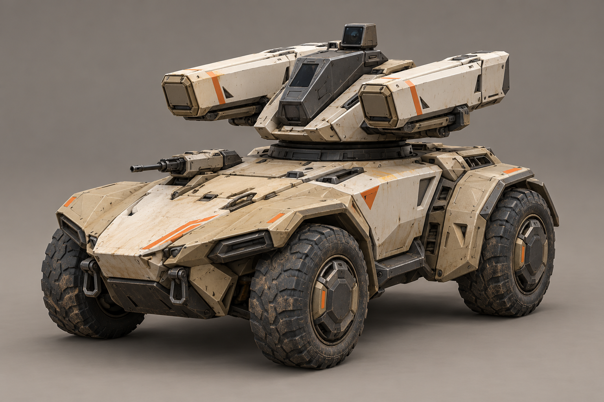
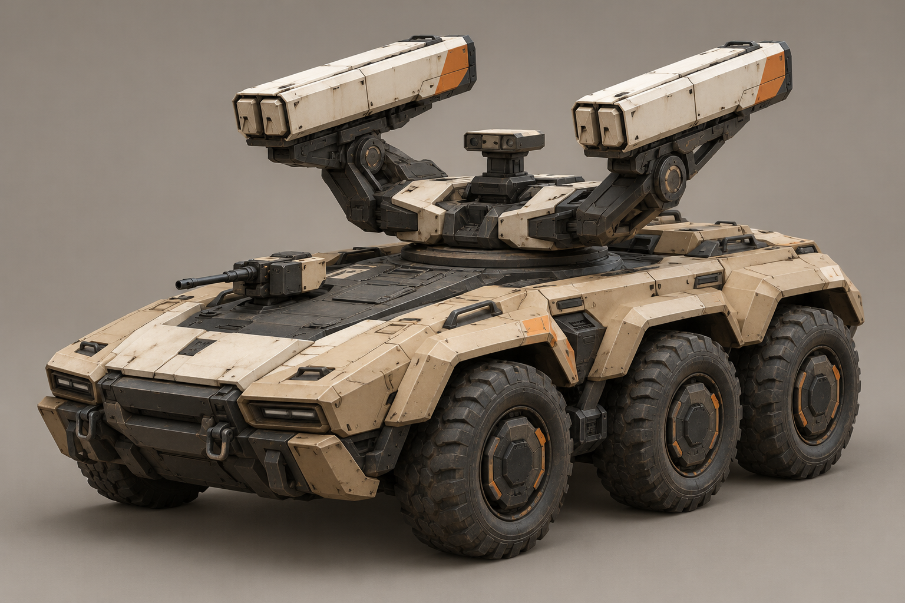
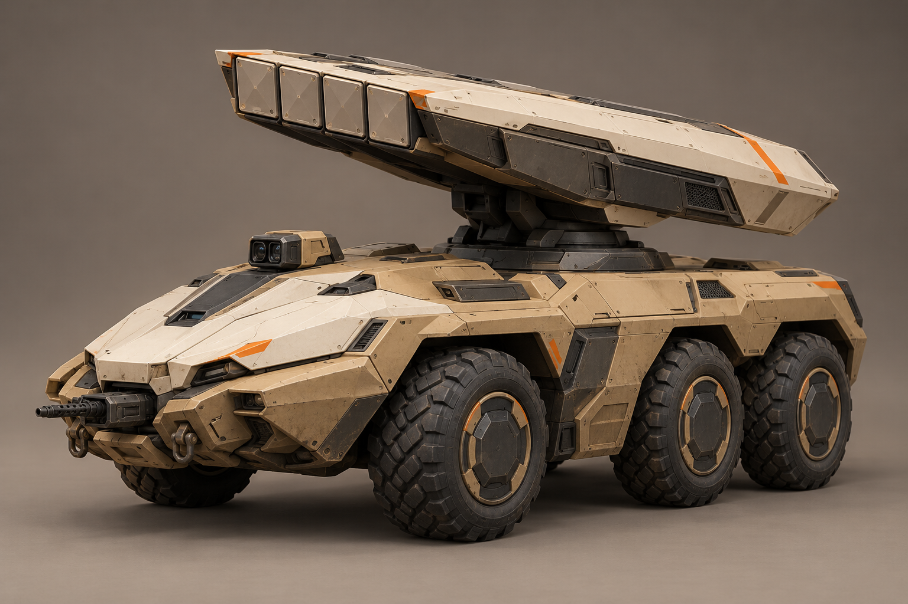
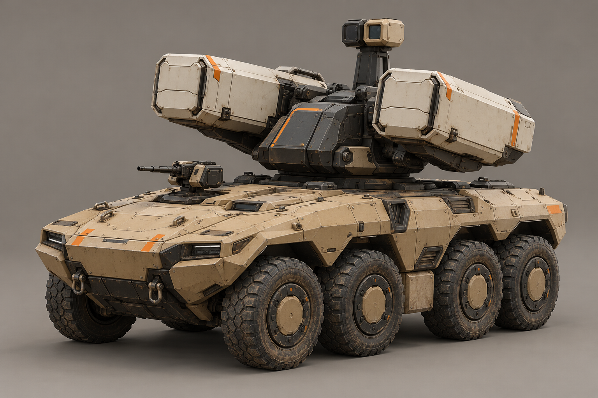
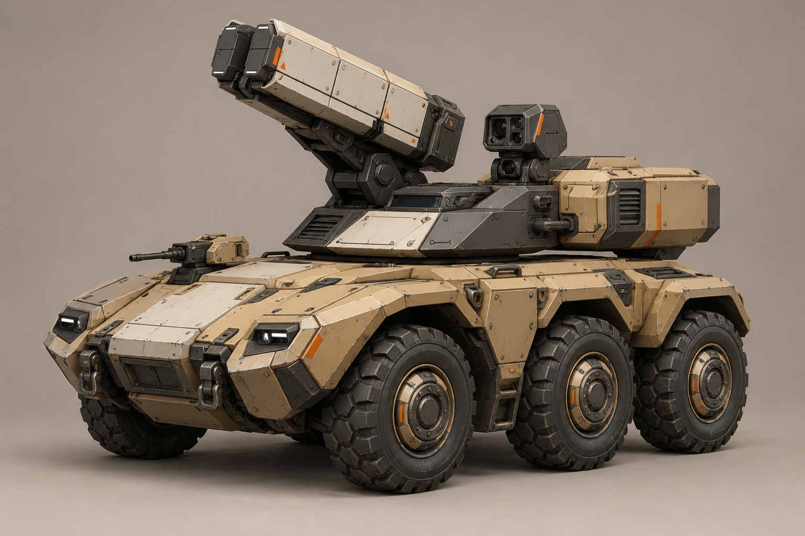
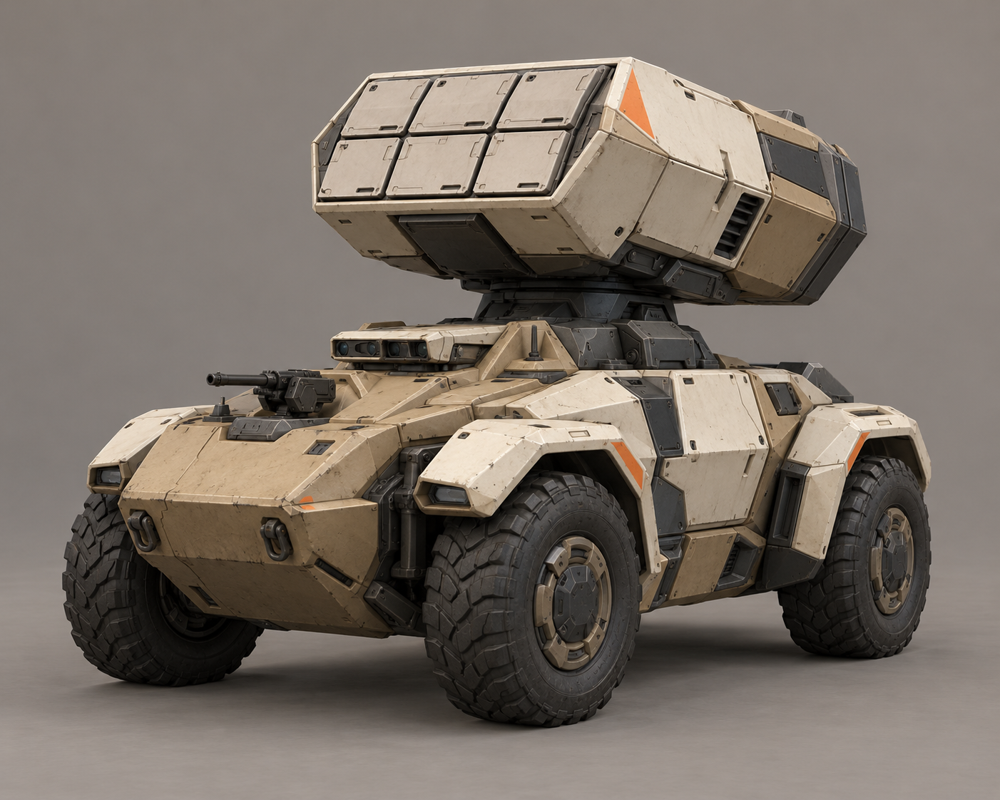
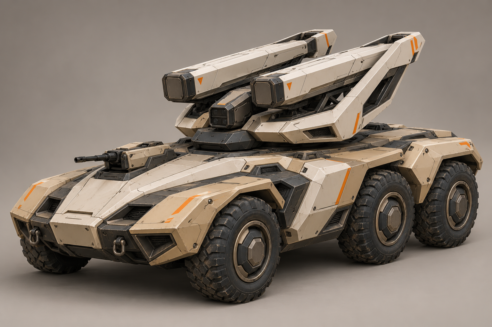
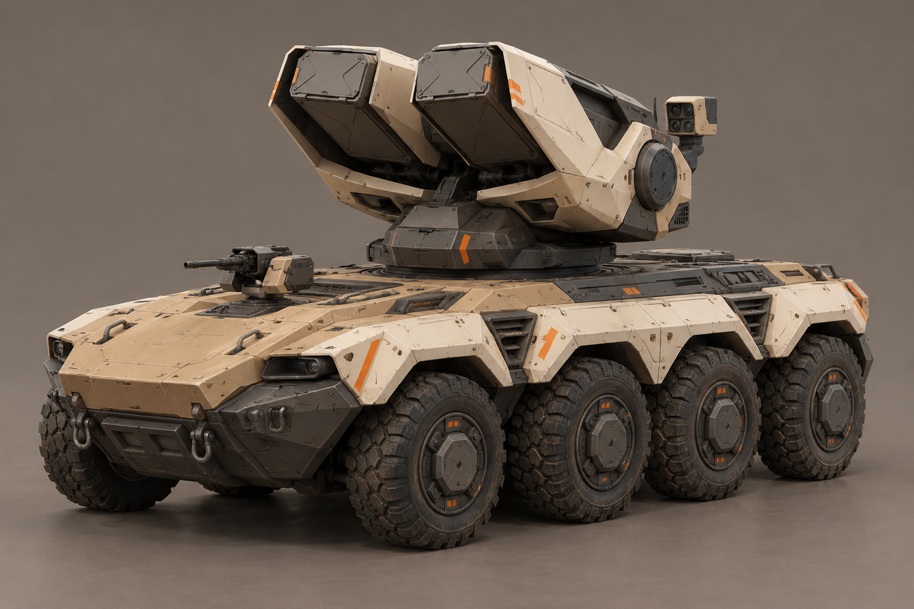

A «Стриж»Компактное четырёхколёсное шасси, две тонкие кассеты и низкая стреловидная головка.Открыть крупно · Промпт
B «Развилка»Шесть колёс, разнесённые пусковые блоки и открытая центральная вилка.Открыть крупно · Промпт
C «Клинок»Плоский наклонный блок, шесть колёс и длинные чистые грани.Открыть крупно · Промпт
D «Дозор»Восемь колёс, низкая пусковая установка и отдельная гранёная сенсорная головка.Открыть крупно · Промпт
E «Плечо»Асимметричный верх: кассета с одной стороны, датчик с другой.Открыть крупно · Промпт
F «Грань»Короткая база, четыре колеса и компактная шестигранная пусковая головка.Открыть крупно · Промпт
G «Перехват»Удлинённое шестиколёсное шасси и продольная открытая рама с кассетами.Открыть крупно · Промпт
H «Оплот»Восемь колёс и защищённая низкая люлька с пусковыми блоками.Открыть крупно · Промпт